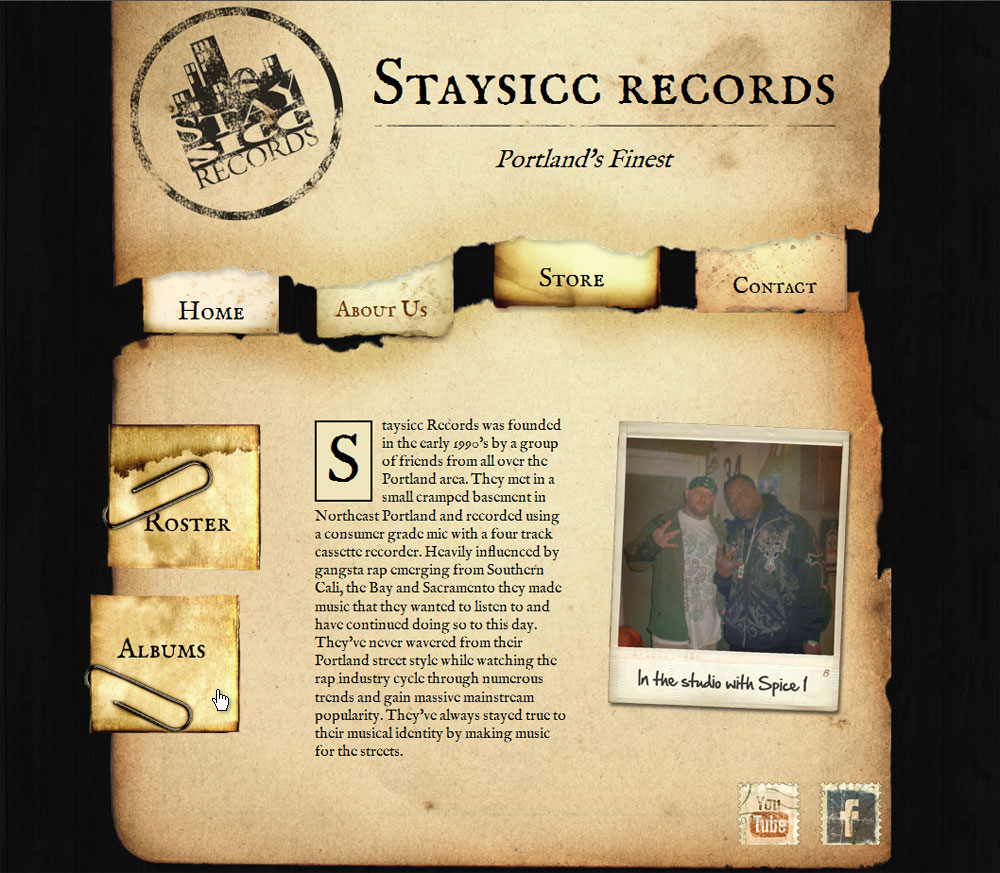
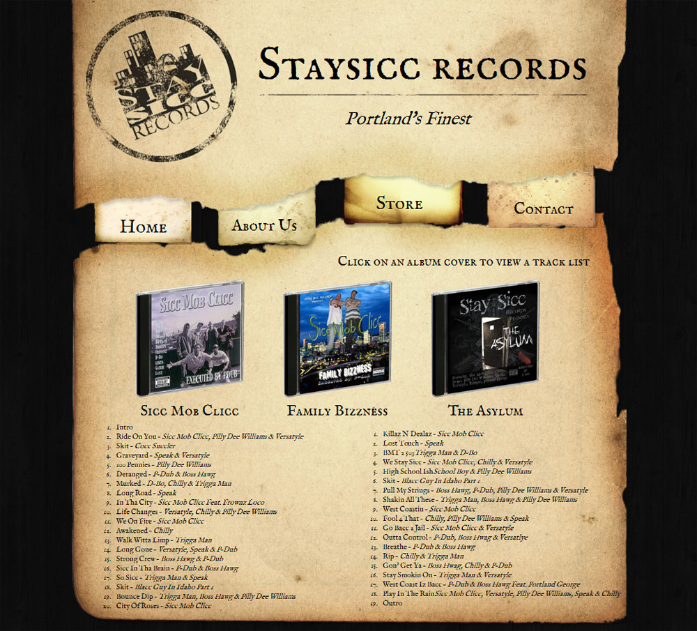

-
I created this music promotion site with lots of texture by utilizing assets that mimic real world physical objects and surfaces. The site has a vintage feel with the distressed logo and historically inspired Fell typeface.
-

The sub navigation received a similiar treatment to the main navigation, both are paper scraps with jQuery animations. More of the real world distressed object design is demonstrated on this page, from the manipulation of the image asset provided by the client to the social media icons.
-

The album data is displayed via jQuery and clicking on an album cover will replace the currently displayed track listing with appropriate information. This site can be viewed live here.